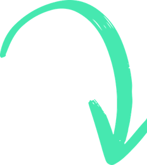
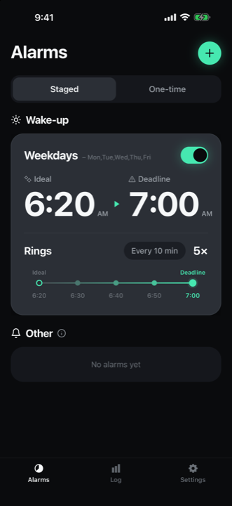
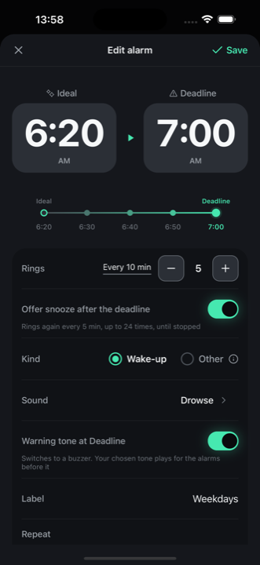
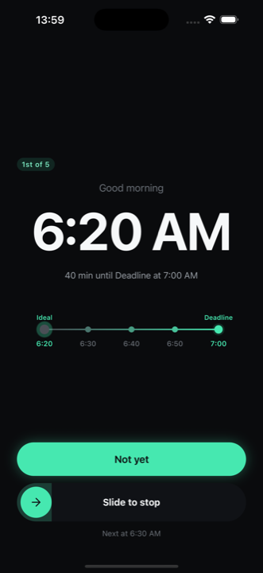
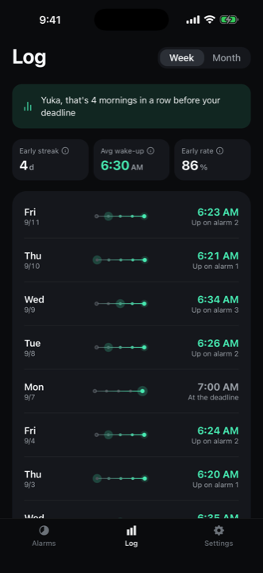
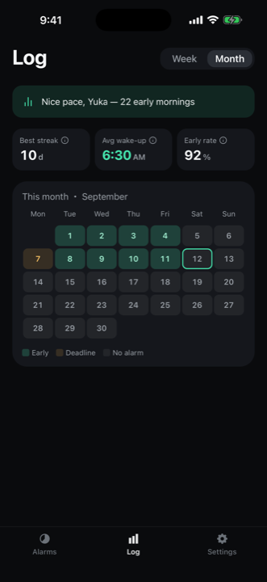
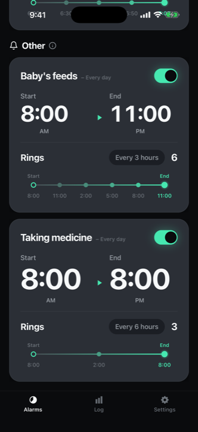

Set and cancel several alarms in one go
End the mornings
full of alarms.
You set one alarm.
The time you'd like to wake, and the time you absolutely have to be up.
Set those two, and Sleep Slope creates every alarm in between.
The moment you're up, the rest disappear.
iPhone · iOS 16.4 or later — free, with in-app purchases
The stock Clock app

Solved!
What goes away
On every night, off every morning.
That whole chore, gone.
The chore that comes with stacking alarms is gone.
Until now
Five alarms, one at a time
The mornings you woke early were always the ones with alarms left behind. Up at six, and still ringing at 6:20, 6:40, 7:00. The better the morning went, the more it punished you.
Sleep Slope
One alarm. That is all.
Set your ideal and your deadline, and everything in between fills itself in. Nothing to add at night, nothing to clear in the morning.
What it does
Two decisions.
The rest is up to tomorrow morning.
It rings as many times as you need, and stops when you are up. It does nothing beyond that.
An ideal and a deadline
The time you would like to wake, and the time you absolutely have to be up. Set those two and Sleep Slope creates every alarm in between. Adding them one at a time is over.
As many rings, as close together, as you like
Three alarms or ten. Five minutes apart or twenty. No limit on the count, the spacing or the deadline — for free. Repeat by weekday, too.
The moment you are up, the rest disappear
Stop the alarm, tap “I’m up”, and the rest of the day’s alarms are off. No opening the settings screen, no deleting them one by one.
Through the silent switch, and through Focus
From iOS 26 it rings with the operating system’s own alarm facility. It rings with the silent switch on and during Do Not Disturb, and you can stop it straight from the Lock Screen.
A harder sound, for the deadline only
Something quiet for the alarms along the way, and something that will not be slept through once your deadline has passed. Chosen per alarm, and free.
It remembers which alarm worked
It records the time you got up and how much room you had left before your deadline. There is nothing to switch on and nothing to do later.
How it goes
Make one at night.
In the morning, just stop it.

1. Set the range
Ideal, deadline, and how many times it rings. Decide those and the times in between line up on their own.

2. You can see what is left
Which ring you are on, and how long until your deadline. You push it to the next one knowing both.

3. It stays on record
Which alarm you got up on, and at what time. It stays without you doing anything.

Log
See how your mornings go.
It records how much room you had before your deadline, day by day. Seeing your own wake-up data plainly is what makes it easier to understand your mornings.
- Which alarm you got up on
- Days in a row you were up before your deadline
- Records stay on your device. Nothing is sent anywhere

Not only for waking up
For anything you want telling about
several times a day.
Medicine. A baby’s feed. Water. Getting up from your desk. Set a start and an end, and it rings evenly across the span.
- 8:00 AM to 11:00 PM — six times, every three hours
- Repeat by weekday, too
- Listed separately from your wake-up alarms
Sleep Slope Pro
Without Pro, it still rings
as often as you like.
The count, the spacing and the deadline have no limit for free. Pro is not for unlocking the basics — it is for having more of it.
Pro is an auto-renewing subscription. Price, duration, and any free trial are shown on the purchase screen in the app. You can cancel any time in Settings > your name > Subscriptions.
FAQ
Questions people ask
Does it ring on silent?
From iOS 26, Sleep Slope uses the operating system’s own alarm facility. It rings with the silent switch on and during Do Not Disturb, and you can stop it or snooze it from the Lock Screen. On iOS versions before 26 it rings through notifications: it follows your silent switch and Focus settings, and the sound stops after a few dozen seconds.
What if I sleep past my deadline?
Once your deadline has passed, it rings again every five minutes until you stop it. That is what not betting the morning on one alarm actually means.
Does it ring on an Apple Watch?
It does. There is no Watch app to install and nothing to set up. If your Watch is connected to your iPhone when the alarm rings, you feel it on your wrist and can stop it from there.
Is my data sent anywhere?
There is no account. Your wake-up records and settings are stored only on your device and are not sent to any server. See the Privacy Policy for details.
Can I move my records to a new phone?
Records are stored only on the device, so there is no transfer between devices. If you have device backup (iCloud and the like) switched on, they are included in that backup.
It did not ring
The support page lists what to check, and where to get in touch.
From tomorrow morning,
one alarm is enough.
iPhone · iOS 16.4 or later — free, with in-app purchases